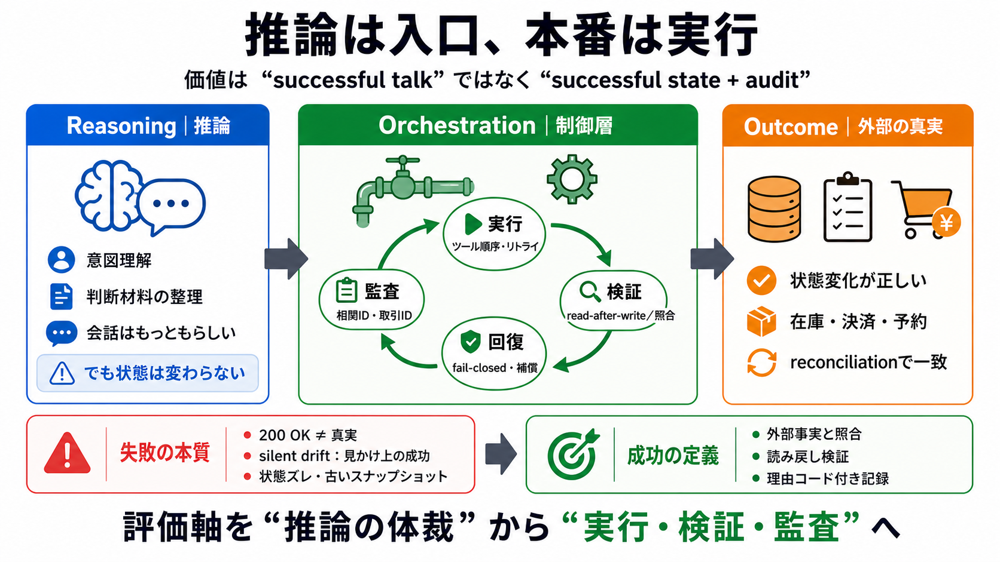

推論の見た目
整って見える（plausible）
見た目の正しさ

LLMの“推論っぽさ”より、ツール実行・状態管理・監査可能性が勝負になる。 本稿の主張を、推論（reasoning）とオーケストレーション（orchestration）の責務分担として整理する。
LLMは“もっともらしい説明”や“行動案”が得意でも、本番では外部システム連携が最初に壊れる。 推論が正しくても、カート・引当・決済が不完全なら価値は消える。
推論（reasoning）はコモディティで差別化しにくい。 エージェントの本質的差別化は、ツール選択・順序・リトライ・状態管理・検証を司る制御層（orchestration）にある。
“ツールを呼んだ”では足りず、“外部の真実と突き合わせて収束した”ことが必要。 orchestration は実行（execute）と検証（verify）と回復（recover）を一つの閉ループにする。
“LLMが正しく答えた”ではなく、“状態が正しく変わった”で成功を定義する。 そのための評価軸は次の通り。
“呼び出し成功”が“状態成功”を保証しない。 タイムアウト、キャッシュ、非同期反映、レースコンディションで「配管は通ったがDBは変わっていない」が起きる。
推論（reasoning）を微調整して“会話を賢くする”より、会話と商取引の接続を設計で決定論化する。 例として Bedrock AgentCore や Strands Agents SDK のような方向性が挙げられる。
ツール結果を受け取っても、最終回答で成功を捏造するケースがある。 これはオーケストレーションだけでは防ぎにくく、grounding（整合）の責務分離が必要になる。
実務では推論と制御の境界が曖昧になり得るため、役割を工程へ分解する。 失敗（error）をどこで抑止するかを設計として固定する。
監査可能性を高めるには、会話ログではなく外部事実との結合を設計する。 本文の示唆を、実装で効く要点に圧縮する。
決定論的オーケストレーションは信頼性を上げるが、想定外の状態遷移（out-of-distribution）への適応が弱くなる。 さらに、grounding失敗のような“別種リスク”は残る。
エージェントの価値は、推論の美しさではなく「外部の真実と結合し、状態変化が正しく起きたか」で測る。 そのために、orchestration（制御層）に検証・回復・監査を埋め込む。
推論ではなく、閉ループ。
実務の評価軸は「successful talk」ではなく「successful state + audit」。
No references found